Every photo on this site comes from a public dataset on Kaggle, casting product image data for quality inspection, published by ravirajsinh45. The photos themselves were taken on an actual production line at Pilot TechnoCast, a casting manufacturer in Shapar, Rajkot, India — real parts, a real camera, real defects, not a synthetic benchmark.
The part being photographed is a submersible pump impeller. Every image is labeled one of
two ways — def_front (defective) or ok_front (OK) — flagged for real casting
defects such as blow holes, pinholes, burr, shrinkage, and mould-material or pouring-metal defects.
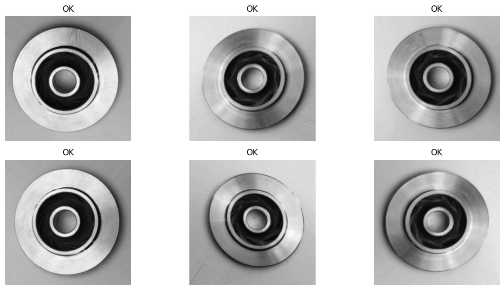
6 OK examples, straight from the dataset
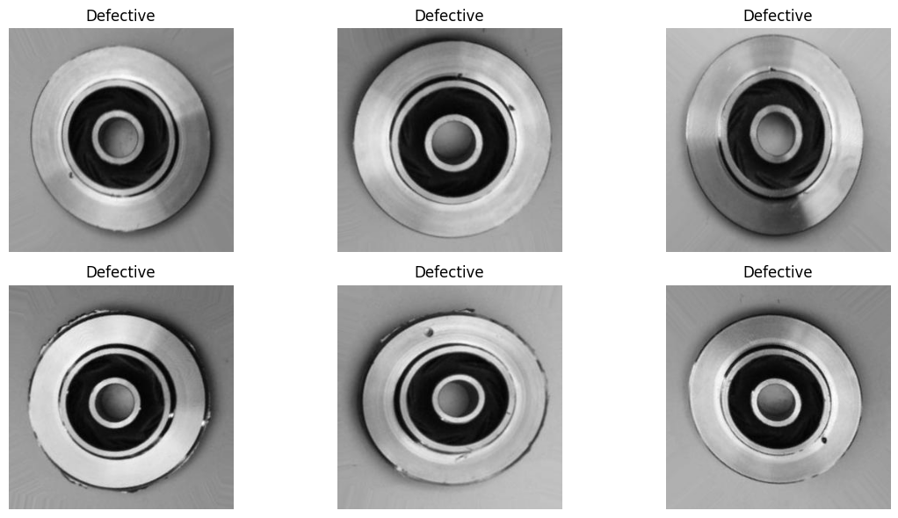
6 defective examples, straight from the dataset
In a real factory, the first line of defense against a bad casting is usually a person standing at a
lightbox — reliable, but slow, subjective, and expensive to run on every single part, every shift. This
project asks a narrower question: can a model do that first pass instead? It's a binary image
classification problem — given one photo of a cast impeller, predict def_front or
ok_front.
To find out, this project doesn't train just one model — it trains 22, then compares every one of them on the exact same 715 held-out test photos. Head to 02_PLAYGROUND to watch any of them make a real prediction, record by record, or 03_MODEL_STATS for the full leaderboard, training curves, and known limitations.
7 ways to turn a photo into numbers, before any classifier ever sees it
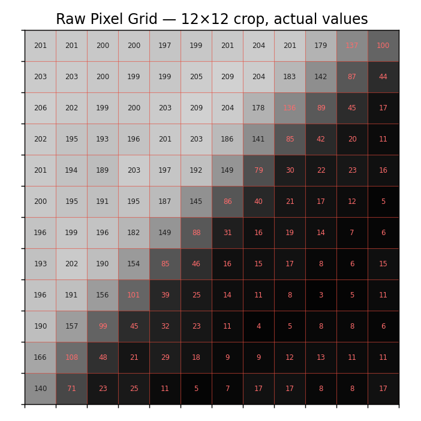
The flattened, normalized grayscale pixel grid itself — no feature engineering at all, just the baseline every other feature has to beat.
↗ OpenCV docs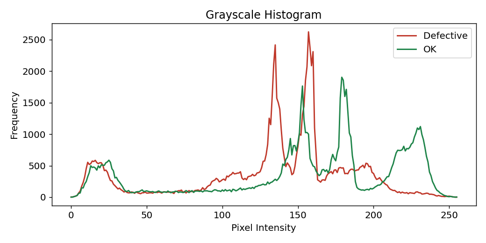
The distribution of brightness values across the whole photo. Cheap — and, as the SYSTEM ADVISORY on this site explains, almost too good at solving this particular dataset.
↗ OpenCV docs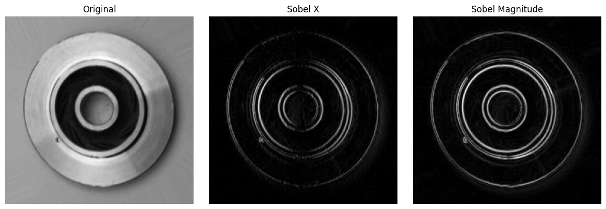
A gradient-based edge detector — highlights where brightness changes sharply, tracing the rim and any cracks.
↗ OpenCV docs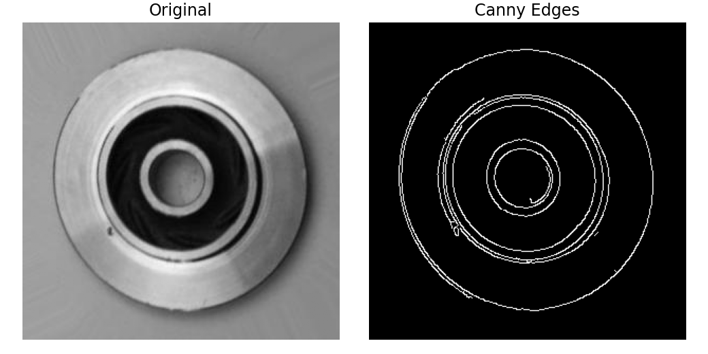
A cleaner, thresholded edge map built on the same gradient idea as Sobel — crisp outlines instead of raw gradient strength.
↗ OpenCV docs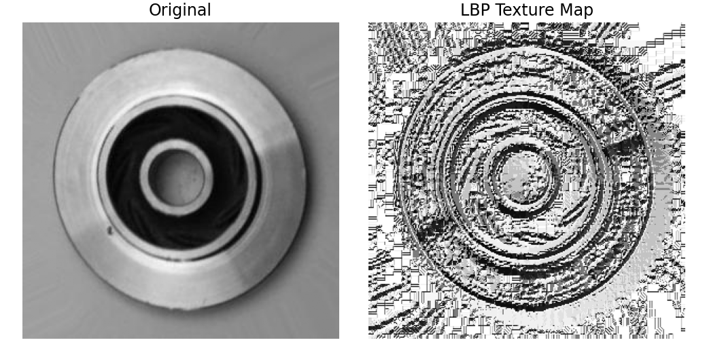
Local Binary Patterns — encodes texture by comparing each pixel to its neighbors, good at picking up the fine surface texture a defect leaves behind.
↗ scikit-image docs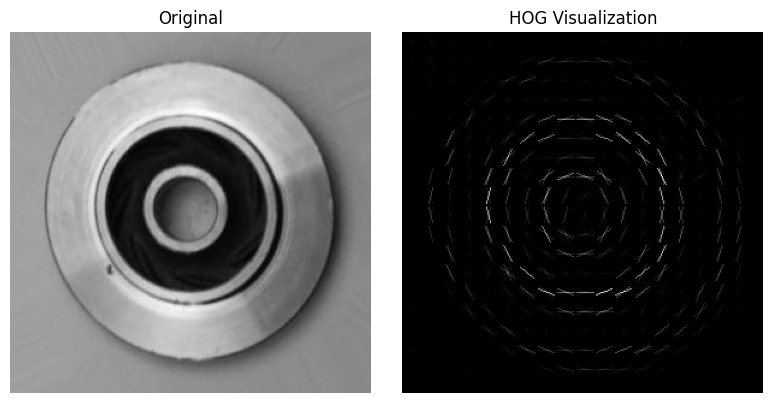
Histogram of Oriented Gradients — summarizes edge direction and strength in local cells, capturing shape and contour structure.
↗ scikit-image docs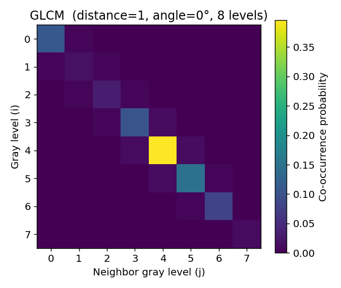
Gray-Level Co-occurrence Matrix — a statistical texture descriptor: how often pairs of pixel values occur next to each other, at a given distance and direction.
↗ scikit-image docs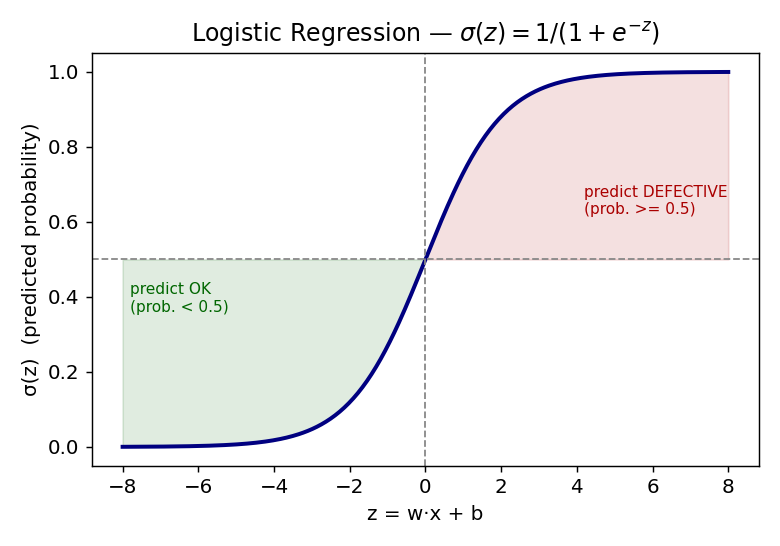
A linear baseline — draws a single straight decision boundary through feature space. Fast, interpretable, and surprisingly hard to beat here.
↗ scikit-learn docs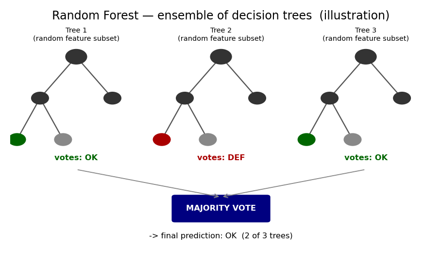
An ensemble of decision trees, each voting on a random subset of features — captures non-linear patterns raw pixels leave on the table.
↗ scikit-learn docs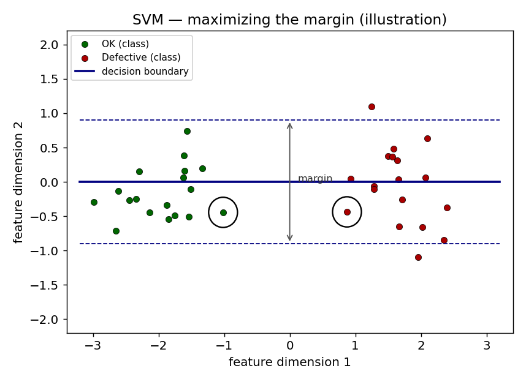
Finds the widest possible margin between the two classes in feature space — this project's single best classical result.
↗ scikit-learn docs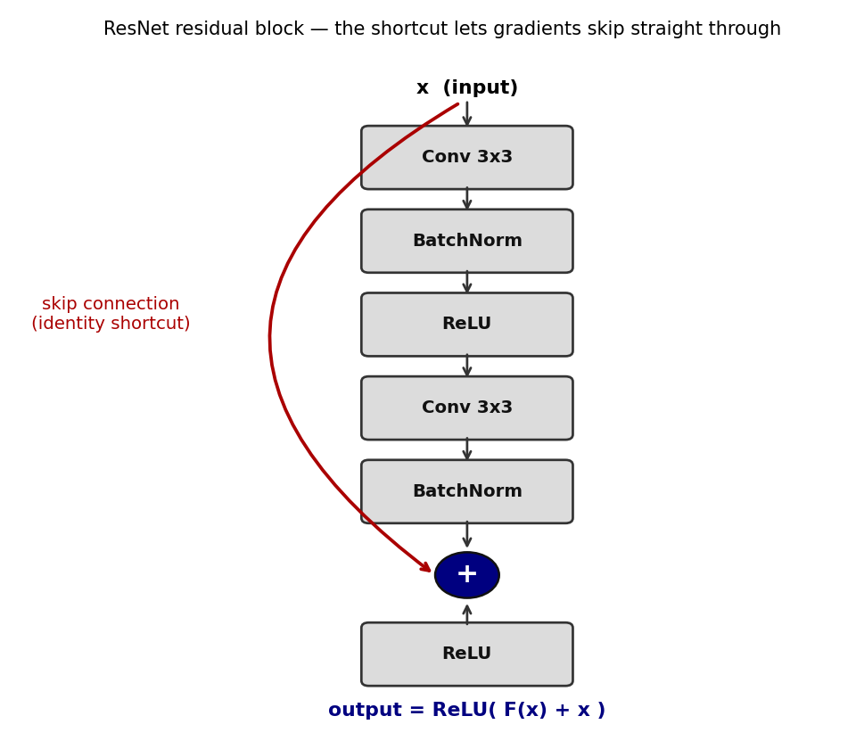
Instead of hand-crafted features, a convolutional neural network learns its own — 18 layers deep, with residual ("skip") connections that let gradients keep flowing through a very deep network. This project fine-tunes a version pretrained on ImageNet (transfer learning) rather than training from scratch.
↗ arXiv paper ↗ PyTorch / torchvision docs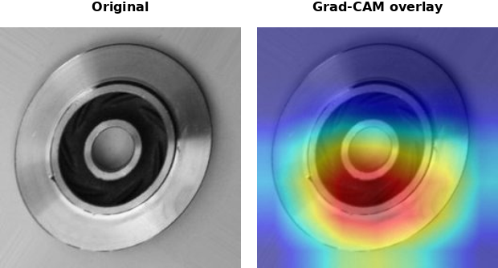
Every ResNet18 prediction on 02_PLAYGROUND ships with a Grad-CAM heatmap — a way to see which pixels actually pushed the model toward its verdict, instead of trusting the confidence number blindly.
↗ arXiv paper